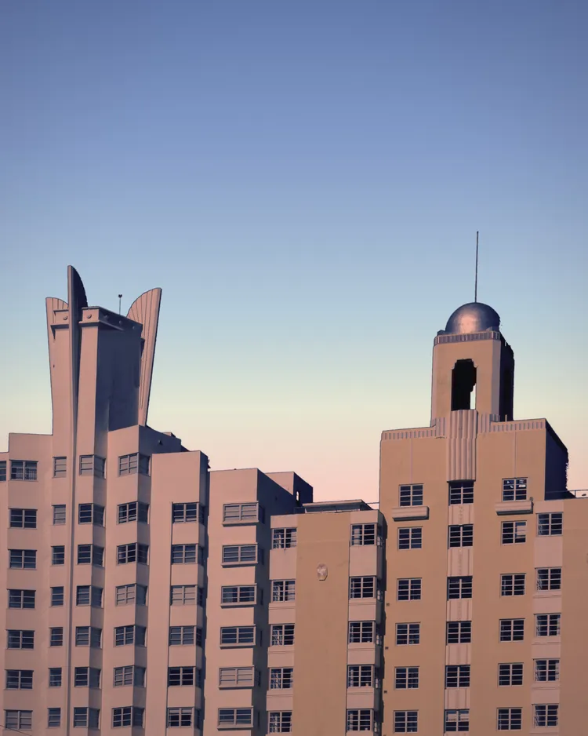
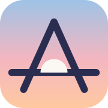
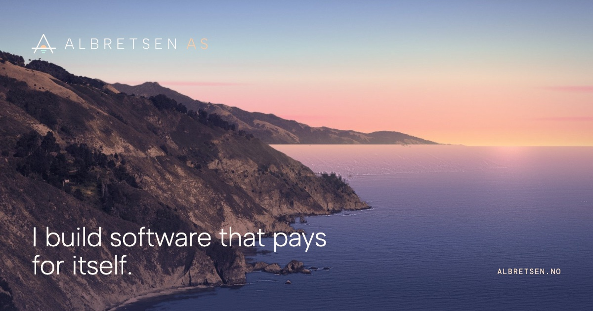
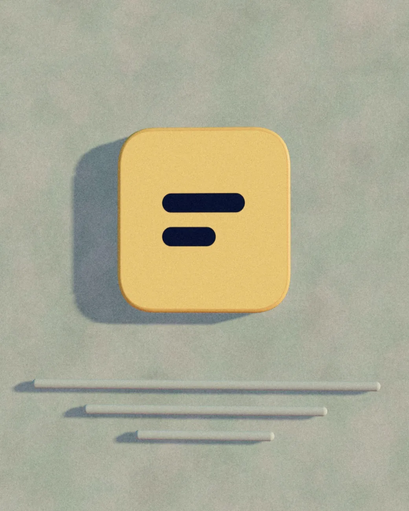
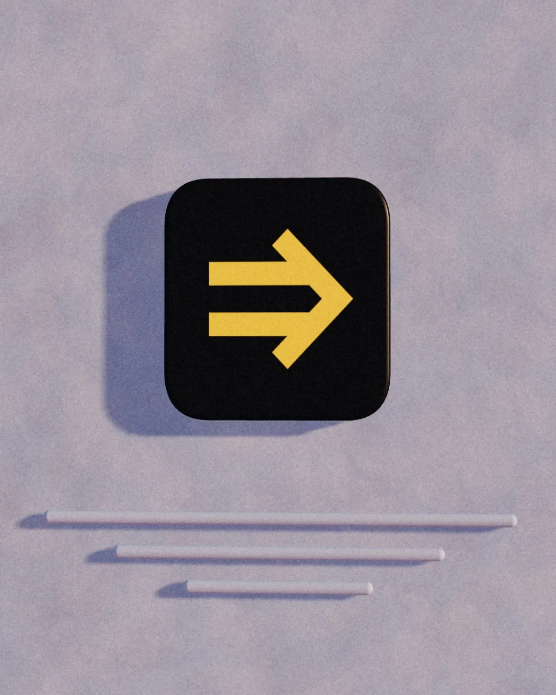
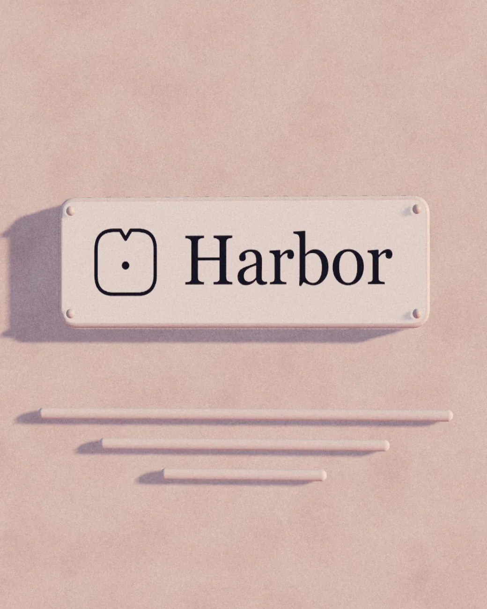
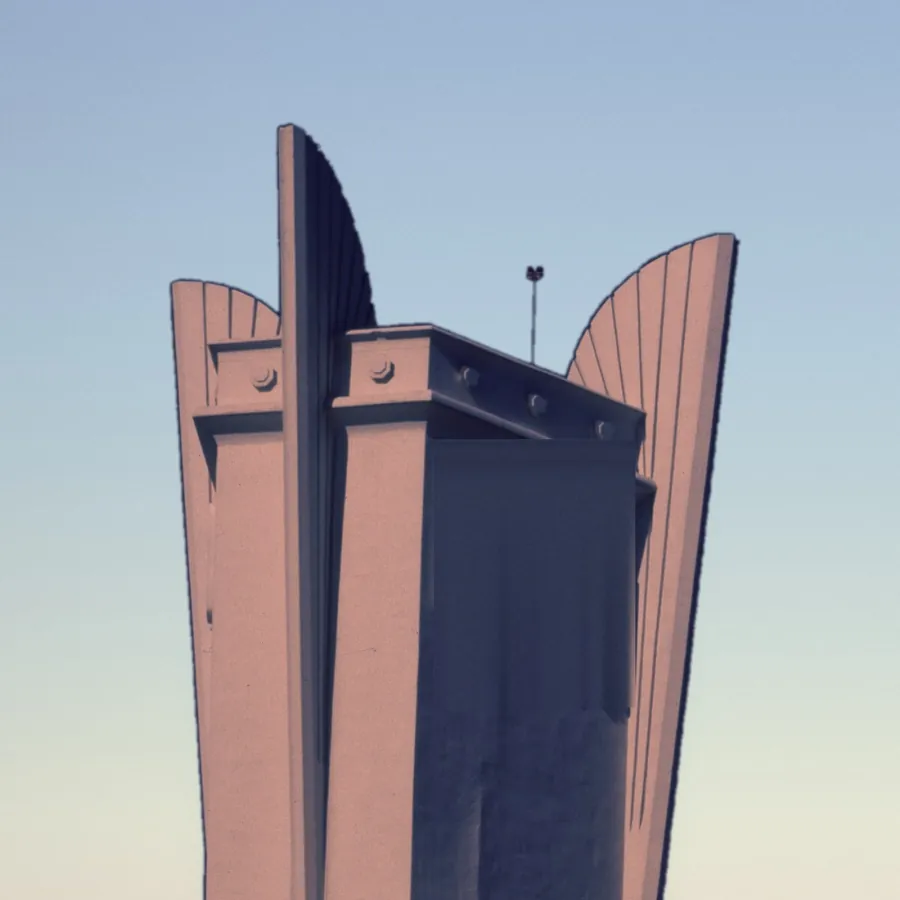
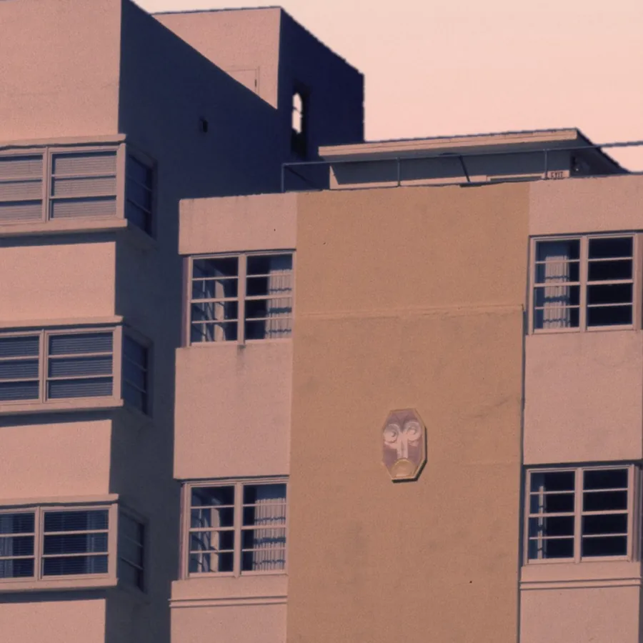
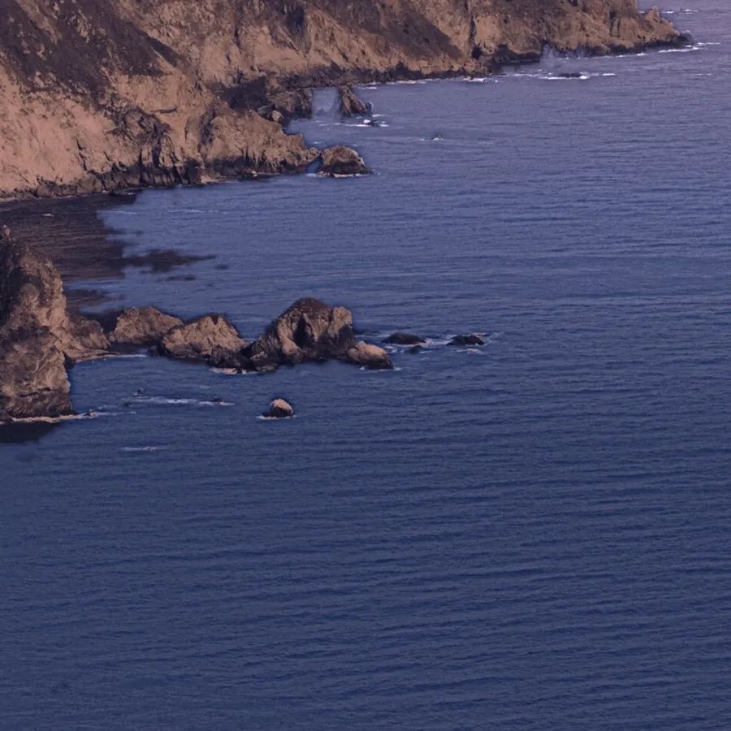
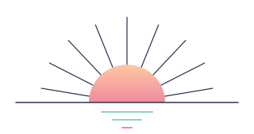

Direction
A slow descent into the last light.
Real photographs, regraded like Portra in the minutes after sunset: cliffs, then a town of pastel deco towers holding the light, then the shore. The products live in that town as glazed tiles on sunlit stucco. Everything is calm, warm and unhurried; one image, one idea, a lot of sky.
Hero imagery · AVIF / WebP / JPEG at 800, 1600, 2400 + 4:5 crops at 750, 1200
Three frames of one evening.

Identity
An A, two cliffs, a sun between them.
The A's legs are cliffs; its crossbar is the horizon; the sun sets inside it and leaves a mint reflection. Drawn in the same 2px line as the type.


Palette · Miami deco at afterglow
Flamingo, mint, sky, plaster.
Type
Albert Sans, light. DM Mono for the small print.
Display · 200Effortless.
Heading · 250Email for AI agents, 17 tools and about 100 providers.
Body · 300 / 17Fun Libs was built at 17, with no marketing, and has passed 113,000 installs. Version 5 shipped in 2026.
Mono · 300claude mcp add albretsen https://albretsen.no/mcp
Caps · 300 +.32emAlbretsen AS · Norway · since 2016
Products · real logos as glazed tiles on stucco, baked from interactive/plaques.js
The town's shop signs.



Retired, as small enamel roundels
Stand-ins for products without surviving brand assets. Luma keeps its real monogram.
Polyglot Pilot
PinPoint
WebVakt
Joke Central
Tryggere Hyring
Early apps
Extras · texture and ephemera
Details from the same roll.




Motion study · motion.css + motion.js + interactive/afterglow.js
Five slow movements.
1 · Horizon rise
Built to run while you sleep.
2 · Sky turn & 3 · Long shadow · scroll inside
MCP Emails
Email for AI agents.
Email for AI agents.
Fun Libs
113,000+ installs.
113,000+ installs.
Toolrails
One MCP URL, every tool.
One MCP URL, every tool.
Harbor
Knowledge shared by people and AI.
Knowledge shared by people and AI.
4 · Afterglow dissolve (CSS fallback; WebGL version is the hero)
5 · Green flash (hidden: rest on the horizon 2s, or type “flash”)